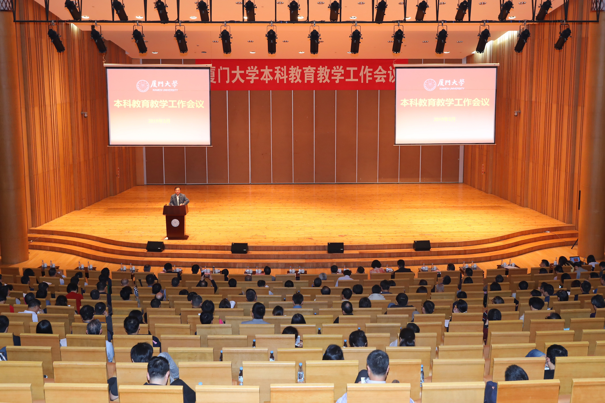

- TT1
- TT2
- TT3

厦门大学（Xiamen University），简称厦大（XMU），由著名爱国华侨领袖陈嘉庚先生于1921年创办，是中国近代教育史上第一所华侨创办的大学，是国内最早招收研究生的大学之一，中国首个在海外建设独立校园的大学，被誉为“南方之强”。 学校直属教育部，中央直管副部级建制，是综合性研究型全国重点大学。
为深入学习贯彻习近平新时代中国特色社会主义思想和党的十九大精神，全面贯彻落实全国教育大会、新时代全国高等学校本科教育工作会议等重要会议决策部署。
|
||
|
||
| 厦门大学（Xiamen University），简称厦大（XMU），由著名爱国华侨领袖陈嘉庚先生于1921年创办，是中国近代教育史上第一所华侨创办的大学，是国内最早招收研究生的大学之一，中国首个在海外建设独立校园的大学，被誉为“南方之强”。 学校直属教育部，中央直管副部级建制，是综合性研究型全国重点大学。 |
青年教师是学校事业发展的生力军和重要力量。学校第十一次党代会报告指出，"要为青年人才施展才干提供更多机会和更大舞台，以爱才的诚意、用才的胆识培养和使用优秀 |  立德树人 提升质量 加快建设一流本科教育——厦门大学本科教育教学工作会议召开 为深入学习贯彻习近平新时代中国特色社会主义思想和党的十九大精神，全面贯彻落实全国教育大会、新时代全国高等学校本科教育工作会议等重要会议决策部署。 |